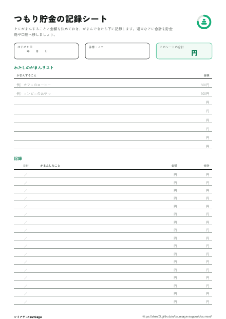

つもり貯金のやり方とリスト例
買ったつもり、行ったつもりで使わなかったお金を貯金する方法です。目標の金額や期間を決めなくても、今日から始められます。
78,000円500円のコーヒーを週3回がまんしたときの1年（52週）分
つもり貯金のやり方
- がまんリストを作る。 よく使っているのに、なくても困らない出費を書き出し、それぞれの金額を決めます。
- がまんできたら記録する。 「コーヒーをがまん 500円」のように、浮いた金額をその場で書きます。
- まとめて移す。 週末や給料日に、記録した合計を貯金箱か口座へ移します。
- 合計を見る。 1か月でいくら浮いたかを見ると、次の目標が立てやすくなります。
1年の目安 ＝ 1回の金額 × 週の回数 × 52週 → 500円 × 3回 × 52週 ＝ 78,000円
つもり貯金のリスト例
金額と回数はあくまで例です。自分の生活に合わせて書きかえてください。
| がまんしたこと | 1回の金額 | 回数の例 | 1か月の目安 |
|---|---|---|---|
| カフェのコーヒーをがまん | 500円 | 週3回 | 6,000円 |
| コンビニのおやつをやめた | 300円 | 週3回 | 3,600円 |
| ペットボトルの代わりに水筒 | 150円 | 週5回 | 3,000円 |
| ランチをお弁当にした | 700円 | 週3回 | 8,400円 |
| タクシーをやめて歩いた | 1,500円 | 月2回 | 3,000円 |
| 外食をやめて自炊した | 1,500円 | 週1回 | 6,000円 |
| 飲み会を1次会で帰った | 3,000円 | 月1回 | 3,000円 |
| セールの服を買わなかった | 3,000円 | 月1回 | 3,000円 |
上の8つを全部続けると、1か月の目安は36,000円です。
4つの進め方
記録だけ
お金は動かさず、浮いた金額を記録するだけ。いくら使わずに済んだかが見えるだけでも、出費は変わります。
その日のうちに移す
がまんした金額を、その日に貯金箱へ入れます。いちばん確実です。
週末にまとめて
1週間分の合計を、週末に口座へ振り替えます。
目標を決める
「沖縄旅行 20万円」のように行き先を決めると、がまんする理由がはっきりします。
つもり貯金を続けるコツ
- リストの金額は先に決めておく。毎回考えなくていいので、記録が一瞬で済みます。
- がまんしすぎない。好きなものを全部やめるのではなく、回数を減らすだけでも十分です。
- 浮いた金額は、記録だけで終わらせずに、定期的に実際のお金として移します。

がまんしたら、ボタンを押すだけ
ツミアゲでは「コーヒーをがまん ¥500」のようなボタンを作っておけば、押すだけでつもり貯金を記録できます。ウィジェットからも押せて、広告は出ません。
よくある質問
つもり貯金とは何ですか？
買ったつもり・使ったつもりで、実際には使わなかったお金を貯金する方法です。
どんなものをがまんすればいいですか？
カフェのコーヒー、コンビニのおやつ、タクシーなど、よく使っているのに、なくても困らない出費が向いています。
お金は実際に移したほうがいいですか？
記録だけでも出費の見直しになりますが、貯金として残すなら、週末などにまとめて貯金箱や口座へ移すのがおすすめです。
つもり貯金はいくら貯まりますか？
人によって違います。たとえば500円のコーヒーを週3回がまんすると、1年（52週）で78,000円です。